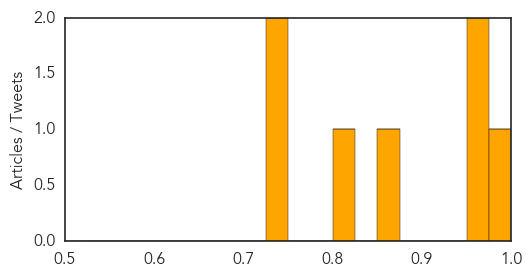
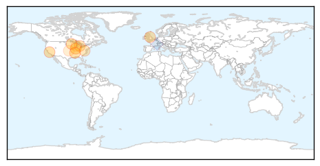
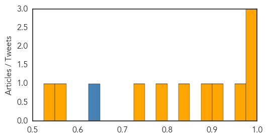

West Nile Virus
30-Day Web Trend
30-Day Twitter Trend
0 alerts, 0 warnings

Article Locations

Article Confidences
Top Articles:
- 0.976
- West Nile Virus Claims Second Indiana Victim
- 0.964
- West Nile Virus Found in Huntington
- 0.955
- EEE virus found in Vermont mosquito
- 0.855
- CHD: 2 more batches of mosquitoes test positive for West Nile Virus
- 0.802
- Shelton Resident Infected with West Nile Virus
- 0.727
- 5 Human Cases of West Nile Virus Reported in Connecticut
- 0.725
- State reports Indiana’s 2nd West Nile virus human fatality
Top Tweets:
-
No tweets found for Sep 24, 2015
Influenza
30-Day Web Trend
4 alerts, 2 warnings

30-Day Twitter Trend
1 alerts, 0 warnings

Article Locations
Article Confidences
Top Articles:
- 0.998
- IDPH urges public to get flu vaccinations
- 0.992
- Flu vaccine will be better than last year, CDC says
- 0.990
- Local health care providers prepare for flu season
- 0.965
- Flu Season Right Around the Corner
- 0.901
- Rapidly assessing the next influenza pandemic
- 0.897
- Health Department to Host Community-Wide Influenza Vaccine Clinic Sept. 28-29
- 0.838
- NanoBio's Genital Herpes Vaccine Demonstrates Efficacy In Guinea Pigs As Both A Prophylactic And A Therapeutic Vaccine
- 0.793
- Flu vaccine promises to be far more effective this year
- 0.733
- Flu shot clinic set for Oct. 6
- 0.565
- Balanced Coverage: Flu vaccination legislation
- 0.541
- USDA plan to suffocate chickens infected with avian flu would "cook them alive"
Top Tweets:
- 0.636
- Deciding on influenza vaccines composition in Sept. gives manufacturers sufficient time to have doses of vax ready before the flu season